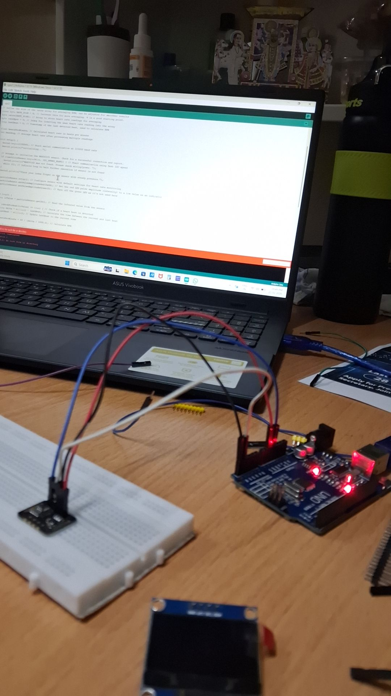

03 — Embedded Systems
SpO2 & Heart Rate
Monitor
A real-time blood oxygen and heart rate monitor using Arduino Uno, a MAX30102 pulse oximetry sensor, and an OLED display.

Overview
This project explores healthcare hardware and signal processing through a compact pulse oximeter prototype. The MAX30102 sensor captures optical readings, Arduino Uno processes the signal, and live SpO2 plus BPM values are shown on an OLED screen.
Core Features
Real-time SpO2 and heart rate readings.
Arduino Uno integration with MAX30102 sensor.
OLED output for live display.
Custom C++ logic for core BPM detection.